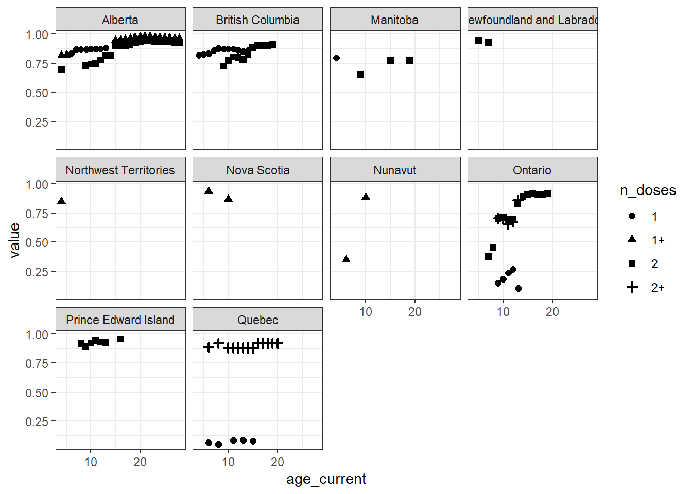
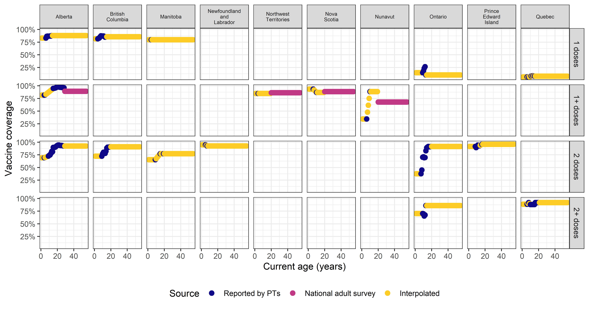
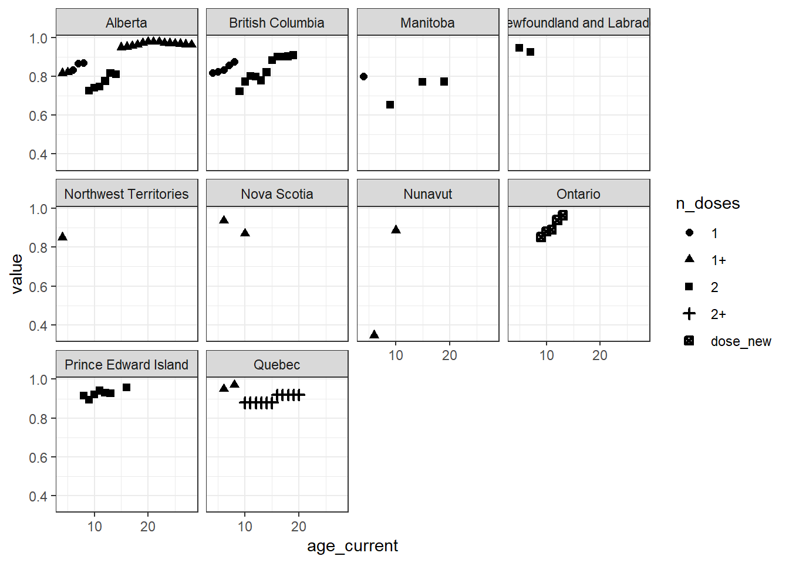
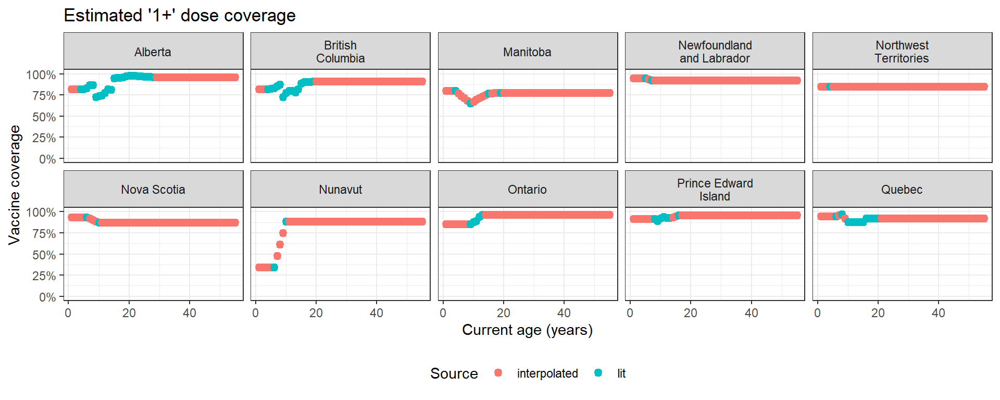

# read in data and filter to province-level
PT_lookup <- readr::read_csv(here::here("data", "pt_lookup.csv"), show_col_types = FALSE)
popsize <- read_csv(here::here("data", "popsize.csv"), show_col_types = FALSE)
vax_raw <- readr::read_csv(here::here("data", "measles_vax-coverage-data.csv"), show_col_types = FALSE) |> filter(location %in% unique(PT_lookup$nm_en))
vax_schedule <- readr::read_csv(here::here("data", "measles_raw", "vax_schedule.csv"), show_col_types = FALSE)
current_year <- as.integer(format(Sys.Date(), "%Y")) # for ageing estimates
age_pre1970 <- current_year - 1969 # min age of those born strictly before 1970Preliminary modelling of vaccine coverage
We’ve collected a large dataset of vaccine coverage data (see measles_vax-coverage-data.qmd). In order to use this data to inform the ABM, we have to take care of a few modelling and formatting tasks (in this rough order):
- determine how to “age” the estimates to present day
- resolve how to use multiple estimates for a given age (stemming from a different number of doses, for instance)
- interpolate/extrapolate coverage where there is no estimate for an age
- format the data to suit input into the ABM
To input these data into the ABM, we need to output them in a specific format.
Analysis overview
A simple analysis is completed here to ensure timely use of the model until such a time as a more sophisticated approach can be implemented. We show two distinct approaches for inferring missing vaccine coverage estimates. Across approaches, we start with the following procedure to prepare the data:
- split up: the 18+ estimates from aNICS will only get used at the end to fill in coverage for adults born before 1970 where other (aged) coverage estimates do not exist
- parse for age groups: where there is a estimate for a group of ages (e.g., 6-11) that coverage estimate is repeated for all single-year ages in the group
- parse for doses: we assume “2+” doses is equivalent to 2 doses
- age to present day: take the age at estimate + years elapsed to present day to get current age
Originally, we had tried to work with the prepared data while maintaining the different dose types (the “take 1” approach), with the following procedure:
- de-duplicate: take the most recent estimate based on year reported (by dose number and current age), then deal with the case where we have estimates for “0” doses and for “1+” doses along with other estimates (by current age)
- interpolate: perform a linear interpolation for coverage estimates missing between observed values (by dose and current age)
- extrapolate: make assumptions about coverage (by dose and current age) for estimates outside of the observed age range (but that are relevant for the ABM)
- For all other missing coverage estimates (outside of the above two cases), we repeat the first or last uptake rate (Whichever is closest to the age we’re extrapolating to)
- Where estimates were extrapolated in the previous step, but there exists an entry in the aNICS data, use the aNICS estimate
This proved to be quite complicated and the “simple” approach we took resulted in inconsistencies in the final outputs: there were cases where (inferred) dose 1 only and dose 2 coverage would sum to more than 1. So we went with an even simpler approach (“take 2”), where, in most cases, we do away with distinct dose types and simply produce estimates of at least one dose using the following procedure:
- collapse dose types to 1+: treat all measures of (non-zero) as all measuring coverage of at least one dose, unless the PT already has consistent estimates of exactly 1 and exactly 2 doses (ON only), in which case, sum 1 + 2 doses to get coverage of at least one dose
- de-duplicate: for each current age, take the most recent coverage estimate based on year reported; if duplicates persist, take the larger estimate
- interpolate: perform a linear interpolation for coverage estimates missing between observed values (by current age)
- extrapolate: make assumptions about coverage (by current age) for estimates outside of the observed age range (but that are relevant for the ABM)
- For all other missing coverage estimates (outside of the above two cases), we repeat the first or last uptake rate (whichever is closest to the age we’re extrapolating to).
- Where estimates were extrapolated in the previous step, but there exists an entry in the aNICS data, use the aNICS estimate.
We finish both approaches by adding additional immunity assumptions:
- add in assumptions on immunity for those born before 1970 and for infants via maternal immunity:
- Everyone born strictly prior to 1970 is assumed to have been infected at some point and therefore has robust immunity that exceeds 2 dose coverage.
- Some children younger than 12 months are assumed to have some protection via maternal immunity. A quick search revealed that maternal antibodies wane quickly, and that by 3 months, most children in non-endemic areas are assumed to be susceptible to infection (see this article)[https://doi.org/10.1542/peds.2019-0630]. For that reason, we are making the assumption that 25% of infants, aged 0, have maternal immunity.
- map dose number to a vaccine efficacy level: Here, too, we make some assumptions:
- “1+” doses confers the average of the efficacy between 1 and 2 doses
- Immunity for those born prior to 1970 is assumed to have immunity that exceeds 2 dose coverage
- Maternal immunity confers complete (100%) protection
Additional immunity assumptions are documented below, before exploring the two approaches for inferring missing vaccine coverage estimates.
Prepare the data
Read data
Split off 18+ estimates
vax_split <- vax_raw |>
mutate(aNICS = (age == "18+" & !is.na(age)))
vax_raw <- vax_split |> filter(!aNICS) |> select(-aNICS)
vax_aNICS <- vax_split |>
filter(aNICS) |>
select(-aNICS) |>
# prepare for attaching later
# age estimates
mutate(age_current = pull_first(age) + (current_year - year_report)) |> transmute(
pt, n_doses,
age_current, value,
) |>
# complete age group by pt and n_doses and repeat only obs for all current ages (don't bother estimating for those born 1970 or later---we handle their vax coverage separately)
group_by(pt, n_doses) |>
expand_age(new_ages = c(age_pre1970-1)) |>
mutate(
source = "aNICS",
value = na.approx(value, rule = 2)
)Parse ages and doses
vax_parsed <- vax_raw |>
# parse age groups into single-year ages
mutate(age = if_else(is.na(age), as.character(year_report-year_birth), age)) |> # fill in age at report where not present
parse_age_groups(age) Currently, there is one subset of the data recorded for a non-integer age (15 months = 1.25 years old):
vax_nonint <- vax_parsed |> mutate(age_rounded = round(age)) |> filter(age != age_rounded)
DT::datatable(vax_nonint)This is an issue for the ABM, where all ages are integer ages. We could either round these ages somehow or drop these estimates. For this particular case (QC for 1+ doses in report years 2012, 2014, 2016, 2019, 2021), we also have the exact same estimates for age 2:
LH: I think you mean to print the 1+ dose data here so I have changed n_doses != "1+" to n_doses == "1+". Coverage is not identical in age 2 so we may wish to reincorporate the age 1.25 data later on (if for example age 1 model estimates need more informing). But I agree with the plan to remove for now for ABM purposes.
vax_parsed |>
right_join(vax_nonint |>
select(pt, year_report),
by = join_by(pt, year_report)) |>
filter(age == 2, n_doses == "1+") |>
DT::datatable()Thus, we drop the “1+” dose estimates for 15-month-olds in QC.
vax_parsed2 <- vax_parsed |>
anti_join(vax_nonint)Age estimates to current year
vax_aged <- vax_parsed2 |>
mutate(age_current = age + (current_year - year_report)) |>
# filter out ages over 99 (ABM max)
filter(age_current < 100)Save cleaned data
We fill in year_birth where it is missing and then export the cleaned data for use in statistical modelling.
# fill in year_birth where it is missing
vax_clean <- vax_parsed2 %>% mutate(year_birth = ifelse(is.na(year_birth) & !is.na(year_report) & !is.na(age), year_report - age, year_birth))
# export
vax_clean %>% #bind_rows(vax_CA) %>% # attach adult estimates from aNICS?
readr::write_csv(here::here("data", "measles_vax-coverage-data-clean.csv"))Set up additional immunity assumptions
“Coverage” for infants and those born before 1970
#' Attach immunity assumption for those born before 1970
#'
#' @param df data frame matching format expected for input into ABM
#' @param age_pre1970 minimum age of those born in 1970 and before
attach_immunity_pre1970 <- function(df, age_pre1970){
# add coverage for those born in 1970 and before
bind_rows(
df,
tibble(
day = 1,
prov = PT_lookup$al_code,
age_min = age_pre1970,
age_max = 99,
zone = "",
vstatus = "None",
percent = 1,
label = "1-dose-pre-1970"
)
)
}
#' Attach maternal immunity assumption for infants
#'
#' @param df data frame matching format expected for input into ABM
attach_immunity_maternal <- function(df){
# add coverage infants under 1 year old
bind_rows(
df,
tibble(
day = 1,
prov = PT_lookup$al_code,
age_min = 0,
age_max = 0,
zone = "",
vstatus = "None",
percent = 0.25,
label = "maternal-immunity"
)
)
}
#' Adjust vaccine coverage estimate for zone X by assuming an unvaccinated subgroup in the PT
#'
#' @param df dataframe of vaccine coverage (`value`) by population centre (`zone`) and province (`pt`)
#' @param popsize dataframe of population sizes (read from `data/popsize.csv`)
#' @param pt PTs to adjust
#' @param prop_unvaccinated Proportion of the PT population that is unvaccinated
adjust_X_by_unvaccinated_subgroup <- function(df, popsize, pt, prop_unvaccinated){
adj <- popsize |>
filter(pt %in% {{pt}}) |>
mutate(
prop_adj = (prop_pop_rural-prop_unvaccinated)/prop_pop_rural
) |>
select(pt, prop_adj)
df |>
left_join(adj, by = join_by(pt)) |>
mutate(value = if_else(zone == "X" & !is.na(prop_adj), value*prop_adj, value)) |>
select(-prop_adj)
}Vaccine efficacy
#' Set up vaccine efficacy matching format expected for input into ABM
setup_vaccine_efficacy <- function(){
#create the vaccine characteristic spreadsheet.
VE1 <- 0.845
VE2 <- 0.969
VE_pre1970 <- 0.99 # almost perfect immunity (better than VE2 at the very least)
VE_maternal_immunity <- 0.99 # we are assuming 99% protection for infants with maternal immunity. Note that this is not based on any research and should be updated in due course
# output
data.frame(
label = c("1-dose", "2-doses", "1p-doses", "1-dose-pre-1970", "maternal-immunity"),
p_infection = c(VE1, VE2, mean(c(VE1, VE2)), VE_pre1970, VE_maternal_immunity),
p_severity = 0.99
)
}Take 1: maintain different dose types
De-duplicate
# show cases where there is more than one estimate for a given current age and number of doses
(vax_aged
|> group_by(pt, location, age_current, n_doses)
|> count()
|> filter(n > 1)
|> DT::datatable()
)vv <- vax_aged |>
# choose the most recent estimate (by dose and current age) using year reported
group_by(pt, location, age_current, n_doses) |>
filter(year_report == max(year_report)) |>
distinct() # drop a duplicate observation (Ontario, reported in 2023, 9 years old presently)
# where do we have a 1+ dose estimate _and_ other estimates? (the 1+ estimate is extra)
have_1p_extra <- vv |>
group_by(pt, location, age_current) |>
summarize(dose_types = list(n_doses), .groups = "drop") |>
# check for more than 1 dose type reported
filter(lengths(dose_types) > 1) |>
# check if 1+ dose is reported
mutate(is_1p_extra = purrr::map(dose_types, ~ any(str_detect(., "1\\+")))) |>
unnest(is_1p_extra) |>
filter(is_1p_extra)
# in what kind of cases do we have 1+ and other estimates?
have_1p_extra |> pull(dose_types) |> unique()[[1]]
[1] "1+" "2"
[[2]]
[1] "1+" "2+"When we have estimates for dose types “1+” and “2”, we can convert the estimate for “1+” to an estimate for only one dose (“1”) by subtracting away the two-dose coverage (provided two-dose coverage is not for some reason higher than the 1+ estimate). If two-dose coverage is higher than the 1+ dose estimate, the two are incompatible and we take the more recent estimate between the two, dropping the other.
One additional note is that when we have estimates for “0” doses, it’s the compliment of the sum of “1” and “2” doses:
vv |>
ungroup() |>
right_join(vv |> ungroup() |> filter(n_doses == "0") |> select(pt, location, age_current)) |>
arrange(age_current) |>
DT::datatable()So this is also extra information that can be dropped (the default state for agents in the population is unvaccinated).
# drop 1+ estimate where we have estimates for 1 and 2 doses already
to_drop <- have_1p_extra |> filter(lengths(dose_types)==3) |> select(pt,location, age_current) |> mutate(n_doses = "1+")
vv2 <- vv |> anti_join(to_drop, by = join_by(pt, location, age_current, n_doses))
to_mutate <- have_1p_extra |> filter(lengths(dose_types)==2) |> select(pt, location, age_current) |> mutate(to_mutate = TRUE)
vv_add1dose <- vv2 |>
left_join(to_mutate, by = join_by(pt, location, age_current)) |>
filter(to_mutate) |>
pivot_wider(id_cols = c(pt, location, age_current), names_from = n_doses, values_from = value) |>
mutate(`1` = `1+` - `2+`, is_incompatible = `1` < 0)
# for the values above, either the inferred one-dose coverage makes sense (>=0) or it doesn't (<0):
#
# - if it does make sense, we will drop the 1+ estimate and either sub in the inferred one-dose coverage
# - if it doesn't make sense, the 1+ and 2 dose estimates from lit are incompatible, we take the more recent estimate between the two
to_drop_1p <- vv_add1dose |>
filter(!is_incompatible) |>
select(pt, location, age_current) |>
distinct() |>
mutate(n_doses = "1+")
vax_deduped <- vv2 |>
anti_join(to_drop_1p, by = join_by(pt, location, age_current, n_doses)) |>
# for compatible estimates, attach inferred 1-dose value
bind_rows(vv_add1dose |> filter(!is_incompatible) |> pivot_longer(cols = c(`1+`, `2+`, `1`), names_to = "n_doses") |> filter(n_doses == "1") |> select(-is_incompatible)) |>
# for incompatible estimates, keep the most recent estimate
left_join((vv_add1dose |> filter(is_incompatible) |> select(pt, location, age_current, is_incompatible)), by = join_by(pt, location, age_current)) |>
replace_na(list(is_incompatible = FALSE)) |>
group_by(pt, location, age_current) |>
filter(!is_incompatible | year_report == max(year_report)) |>
select(-is_incompatible) |>
# drop 0 doses
filter(!(n_doses == "0"))Here’s what the data looks like so far:
vax_deduped |>
ggplot(aes(x = age_current, y = value)) +
geom_point(aes(shape = n_doses), stroke = 1.25) +
facet_wrap(~location)
Interpolate/extrapolate
Before we interpolate and extrapolate, we will restrict the data according to the vaccination schedule, so that we don’t extrapolate doses to ages that aren’t eligible for them (e.g., dose 2 for age 2 in PTs where the vaccine schedule recommends dose 2 at ages 4-6).
vax_schd <- vax_schedule %>%
pivot_longer(-"Dose number") %>%
rename(n_doses = 'Dose number',
pt = name) %>%
filter(n_doses == 2, value == "4-6 years")vax_terpolated <- vax_deduped |>
group_by(pt, location, n_doses) |>
expand_age(new_ages = c(1, age_pre1970-1)) |>
# interpolate (linearly) and extrapolate (repeating the the closest observed value), noting the source (interpolation or literature)
mutate(
source = if_else(is.na(value), "interpolated", "lit"),
value = na.approx(value, rule = 2)
) |>
# attach aNICS data where the value is otherwise interpolated
left_join(vax_aNICS,
by = join_by(pt, n_doses, age_current),
suffix = c("", "_a")
) |>
mutate(
value = if_else(source == "interpolated" & !is.na(value_a), value_a, value),
source = if_else(source == "interpolated" & !is.na(value_a), source_a, source),
) |>
select(-ends_with("_a"))
ggplot(
vax_terpolated |>
mutate(source = forcats::fct(source, levels = c("lit", "aNICS", "interpolated"))),
aes(y = value, x = age_current, col = source)) +
geom_point(stroke = 1.25) +
scale_y_continuous(labels = scales::label_percent()) +
scale_colour_viridis_d(option = "plasma", end = 0.9, labels = c(aNICS = "National adult survey", interpolated = "Interpolated", lit = "Reported by PTs")) +
labs(x = "Current age (years)", y = "Vaccine coverage", colour = "Source") +
facet_grid(n_doses ~ location,
labeller = labeller(
n_doses = \(x) paste(x, "doses"),
location = label_wrap_gen(10)
)) +
theme(
legend.position = "bottom",
strip.text.x = element_text(size = 6))
Format data for the ABM and add in dosage assumptions
Below we assume that:
- Everyone born prior to 1970 is assumed to have been infected at some point and therefore has robust immunity that exceeds 2 dose coverage.
- Some portion of infants have maternal immunity that is complete (100% effective).
vax_schedule_out <- vax_terpolated %>%
mutate(label = case_when(
n_doses == "1" ~ "1-dose",
n_doses == "2" ~ "2-doses",
n_doses == "1+" ~ "1p-doses"
),
day = 1,
zone = "",
vstatus = "None",
age_min = age_current,
age_max = age_current) %>%
# mutate into ABM-ready format
rename(prov = pt,
percent = value) %>%
ungroup() %>%
select(day, prov, age_min, age_max, zone, vstatus, percent, label) %>%
distinct() |>
attach_immunity_pre1970(age_pre1970 = age_pre1970) |>
attach_immunity_maternal() |>
arrange(prov, age_min, label)
#create the vaccine characteristic spreadsheet.
vax_efficacy_out <- setup_vaccine_efficacy()Take 2: collapse all dose types to “1+”
Collapse dose types to 1+
We start by examining the data to determine which provinces have valid estimates for only 1 and only 2 doses, to separate those out before re-labelling dose types all 1+.
vax_aged %>%
group_by(pt, location, age_current, n_doses) %>%
mutate(n = 1:n()) %>%
filter(n == 1) %>%
pivot_wider(id_cols = c(pt, location, age_current), names_from = n_doses, values_from = value) %>%
select(-`1+`) %>%
mutate( keep = ifelse((!is.na(`2`) & !is.na(`1`)) | (!is.na(`2+`) & !is.na(`1`)), "keep", "")) %>%
filter(keep == "keep") %>%
pull(pt) %>%
unique()[1] "ON" "AB" "BC"There are three provinces that have both 1 and 2/2+ dosage data: ON, AB, BC. However, Ontario’s is the only data in which the sum of the coverage estimates across dose types (0, 1, 2) is 1, i.e. the estimates are consistent and therefore valid.
Thus, for ON we will use 1 and 2 dose coverage as reported (unvaccinated coverage will be assumed correctly by the ABM as the balance), and then for the remaining provinces, we will relabel all (non-zero) estimates to “1+” dose and take the most recent estimate for a current age.
Note that the Ontario data came from two sources, one with 0, 1, and 2 doses, and another with estimates for 2 doses only. For consistency, we’re only going to use the multiple doses data:
vax_ON <- vax_aged %>%
filter(
pt == "ON",
n_doses %in% c("1","2+") # keep 1 and 2+ doses (compatible estimates)
) %>%
#sum the uptake for each year
group_by(pt, location, year_report, year_birth, age, age_current) %>%
summarise(value = sum(value), .groups = "drop") %>%
mutate(n_doses = "dose_new")
vax_new <- vax_aged %>%
filter(pt != "ON") %>%
bind_rows(vax_ON)De-duplicate
We start by dropping all distinct dose types (excluding for ON) in order to take the most recent estimate by current age:
vax_new2 <- vax_new %>%
mutate(n_doses_new = "dose_new") %>%
# choose the most recent estimate (by dose and current age) using year reported
group_by(pt, location, age_current, n_doses_new) %>%
filter(year_report == max(year_report)) %>%
arrange(pt, age_current) %>%
distinct() # drop a duplicate observation (Ontario, reported in 2023, 9 years old presently)Some provinces have two estimates for the same year, for different dosages, e.g., 1+ and 2+ doses in QC. In this case, take the larger uptake value:
vax_dedupe <- vax_new2 %>%
group_by(pt, location, year_report, age_current, n_doses_new) %>%
filter(value == max(value))Here’s what the data looks like so far:
vax_dedupe |>
ggplot(aes(x = age_current, y = value)) +
geom_point(aes(shape = n_doses), stroke = 1.25) +
facet_wrap(~location)
Interpolate/extrapolate
vax_terpolated <- vax_dedupe %>%
group_by(pt, location) |>
expand_age(new_ages = c(1, age_pre1970-1)) |>
# interpolate (linearly) and extrapolate (repeating the the closest observed value), noting the source (interpolation or literature)
mutate(
source = if_else(is.na(value), "interpolated", "lit"),
value = na.approx(value, rule = 2)
) |>
# attach aNICS data where the value is otherwise interpolated
left_join(vax_aNICS,
by = join_by(pt, n_doses, age_current),
suffix = c("", "_a")
) |>
mutate(
value = if_else(source == "interpolated" & !is.na(value_a), value_a, value),
source = if_else(source == "interpolated" & !is.na(value_a), source_a, source),
) |>
select(-ends_with("_a"), -n_doses)
ggplot(vax_terpolated, aes(y = value, x = age_current, col = as.factor(source))) +
geom_point(stroke = 1.25) +
scale_y_continuous(limits = c(0,1), labels = scales::label_percent()) +
labs(x = "Current age (years)", colour = "Source", y = "Vaccine coverage",
title = "Estimated '1+' dose coverage"
) +
guides(shape = "none") +
facet_wrap(~ location, nrow = 2, labeller = labeller(location = label_wrap_gen(14))) +
theme(legend.position = "bottom")
Format data for the ABM and add in dosage assumptions
Below we assume that:
- Everyone born prior to 1970 is assumed to have been infected at some point and therefore has robust immunity that exceeds 2 dose coverage.
- Some portion of infants have maternal immunity that is complete (100% effective).
- Vaccine efficacy for “1+” dose is equal to that of 1 vaccine dose (a worst case scenario).
- Remote communities (zone X) in certain PTs have some proportion of the population that is unvaccinated and not accounted for in the vaccine coverage estimates, so the PT-level coverage estimates are additionally reduced to reflect this.
vax_schedule_out <- vax_terpolated %>%
mutate(label ="1p-doses", # assuming 1+ dose coverage where we compressed to "1+" dose
day = 1,
zone = list(c("A", "B", "C", "X")), # list-col that we can unnest
vstatus = "None",
age_min = age_current,
age_max = age_current) %>%
unnest(zone) |>
# add adjustment based on allocating PT-level undervaccinated within X
adjust_X_by_unvaccinated_subgroup(
popsize = popsize,
pt = c("NB", "ON", "MB", "SK", "AB", "BC"),
prop_unvaccinated = 0.01 # applied equally across selected PTs
) |>
# mutate into ABM-ready format
rename(prov = pt,
percent = value) %>%
ungroup() %>%
select(day, prov, age_min, age_max, zone, vstatus, percent, label) %>%
distinct() |>
attach_immunity_pre1970(age_pre1970 = age_pre1970) |>
attach_immunity_maternal() |>
arrange(prov, age_min, label)